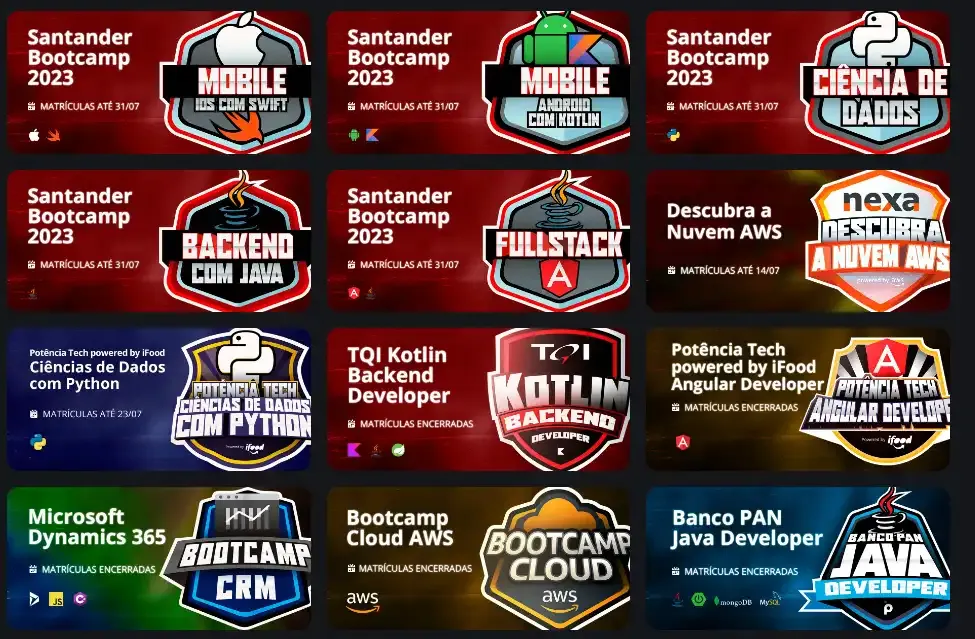

O CodeStack é um portal de notícias e cursos de programação para quem deseja aprender mais sobre desenvolvimento de software e tecnologia. Aqui você encontra as últimas novidades do mundo da programação, além de cursos gratuitos e dicas para quem deseja se tornar um desenvolvedor de sucesso.

Plataforma oferece cursos gratuitos de programação
Uma nova plataforma de ensino online está oferecendo cursos gratuitos de programação em diversas linguagens, incluindo Python, JavaScript e C#. Os cursos são voltados para iniciantes e contam com certificação gratuita ao final. Além disso, há exercícios práticos e desafios para fixação do conteúdo.
Para saber mais, acesse o site da plataforma aqui.

GitHub lança novo recurso para aprendizado de código
O GitHub anunciou um novo recurso chamado "GitHub Copilot for Learning", que ajuda desenvolvedores iniciantes a entenderem melhor o código e boas práticas de desenvolvimento. A ferramenta sugere explicações automáticas para trechos de código e está disponível para estudantes e programadores iniciantes.
Para saber mais, acesse o site da plataforma aqui.

Python 3.12 é lançado com melhorias significativas
A nova versão do Python 3.12 foi lançada, trazendo melhorias de desempenho e novos recursos, como suporte aprimorado a padrões de correspondência e otimizações no interpretador. A nova versão promete facilitar o desenvolvimento e tornar os programas mais eficientes.
Para saber mais, acesse o site da plataforma aqui.

Empresas oferecem bootcamps gratuitos para desenvolvedores
Grandes empresas de tecnologia estão oferecendo bootcamps gratuitos para quem deseja entrar na área de desenvolvimento de software. Os programas incluem aulas sobre desenvolvimento web, bancos de dados e práticas ágeis, além de mentorias com profissionais experientes.
Para saber mais, acesse o site da plataforma aqui.
Curso gratuito de Inteligência Artificial disponível online
Uma nova iniciativa educacional está disponibilizando um curso gratuito de Inteligência Artificial para desenvolvedores e entusiastas da área. O curso aborda desde conceitos básicos até aplicações práticas de IA, como aprendizado de máquina e redes neurais.
Para saber mais, acesse o site da plataforma aqui.